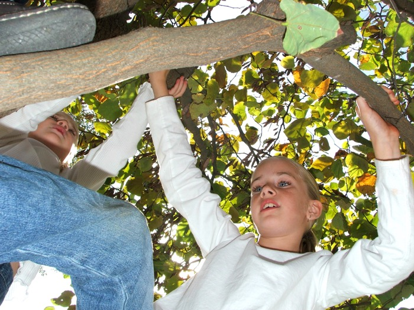

Next Photo
-
Vote
Climbing Children
I love the look of wonder her eyes as she and her sister climb. Most of the interest in the photo comes from the angles of the shot and the kids. The depth the tree and leaves create is also nice. Because most of the natural light in the photo was coming from above, through the leaves, I lit the foreground with the on camera flash. The result is much more appealing than I expected. the flash kept the image contrast, for the most part, and kept the lighting level. Another this i like about this photo is is the colors. They basically include white blue and green. It really isolates the skin tones and brings your eyes to the face. I like it.
More...
Title: Climbing Children
Description: I love the look of wonder her eyes as she and her sister climb. Most of the interest in the photo comes from the angles of the shot and the kids. The depth the tree and leaves create is also nice. Because most of the natural light in the photo was coming from above, through the leaves, I lit the foreground with the on camera flash. The result is much more appealing than I expected. the flash kept the image contrast, for the most part, and kept the lighting level. Another this i like about this photo is is the colors. They basically include white blue and green. It really isolates the skin tones and brings your eyes to the face. I like it.
Keywords: children climbing fun wonder bye eye glint
Hidden: n
Date added: Mon Oct 29 15:25:35 CDT 2007
Date taken: Sat Sep 30 11:14:52 CDT 2006
Camera: FinePix S5100 .
Resolution: 2272x1704
Mode: 0
Shutter speed: 846/100
Flash: 9
Exposure time: 10/3400
Iso: 64
Metering: 5
Aperture: 430/100
Focal length: 670/100
Artist: NathanielGuy Mahieu
Copyright: 2007 NathanielGuy Mahieu
Views: 293